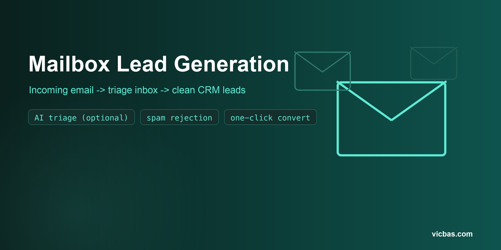

<section class="oe_dark">
    <div class="oe_row oe_spaced" style="max-width: 900px; margin: 0 auto">
        <!-- Hero -->
        <div class="oe_span12 text-center" style="padding: 30px 0">
            <h2 class="oe_slogan" style="font-size: 2.5em; color: #0d9488">
                Mailbox Lead Generation
            </h2>
            <h3
                class="oe_slogan"
                style="font-size: 1.3em; color: #666; font-weight: 300"
            >
                An email triage inbox that turns incoming mail into clean CRM
                leads
            </h3>
            <p style="margin-top: 10px; font-size: 1.1em">
                Developed by
                <a
                    href="https://vicbas.com"
                    target="_blank"
                    style="font-weight: bold; color: #0d9488"
                    >vicbas.com</a
                >
            </p>
        </div>

        <!-- Banner -->
        <div class="oe_span12 text-center">
            <div class="oe_demo oe_picture oe_screenshot">
                
            </div>
        </div>

        <!-- Key Features -->
        <div class="oe_span12 oe_mt32 text-center" style="padding: 20px 0">
            <h3 style="color: #0d9488">Key Features</h3>
            <div class="oe_span4 oe_mt16 text-center">
                <span class="fa fa-inbox fa-3x" style="color: #0d9488" />
                <h4>Email Triage Inbox</h4>
                <p class="text-muted">
                    Every incoming email becomes a record in a dedicated
                    decantation inbox &#8212; nothing reaches your CRM until
                    you decide.
                </p>
            </div>
            <div class="oe_span4 oe_mt16 text-center">
                <span class="fa fa-tags fa-3x" style="color: #0d9488" />
                <h4>Smart Classification</h4>
                <p class="text-muted">
                    Emails are classified by destination address (inquiry vs.
                    acquisition), plus AI-derived category and intent.
                </p>
            </div>
            <div class="oe_span4 oe_mt16 text-center">
                <span class="fa fa-magic fa-3x" style="color: #0d9488" />
                <h4>AI-Powered Triage</h4>
                <p class="text-muted">
                    Optional AI classification through any OpenAI-compatible
                    endpoint &#8212; configurable base URL, model, key, timeout
                    and retries.
                </p>
            </div>
            <div class="oe_span4 oe_mt16 text-center">
                <span class="fa fa-link fa-3x" style="color: #0d9488" />
                <h4>Matching Suggestions</h4>
                <p class="text-muted">
                    Each email can suggest matching properties or service
                    products, so your team answers with the right offer.
                </p>
            </div>
            <div class="oe_span4 oe_mt16 text-center">
                <span class="fa fa-check-square-o fa-3x" style="color: #0d9488" />
                <h4>One-Click Conversion</h4>
                <p class="text-muted">
                    Review, then convert to a clean <strong>crm.lead</strong>
                    with partner and context &#8212; or reject as spam in one
                    click.
                </p>
            </div>
            <div class="oe_span4 oe_mt16 text-center">
                <span class="fa fa-history fa-3x" style="color: #0d9488" />
                <h4>Full Traceability</h4>
                <p class="text-muted">
                    Clear states (new, reviewed, pending, spam), AI retry,
                    scheduled batch triage and a direct link to the created
                    lead.
                </p>
            </div>
        </div>

        <!-- How It Works -->
        <div
            class="oe_span12 oe_mt32"
            style="padding: 20px 0; border-top: 1px solid #eee"
        >
            <h3 class="text-center" style="color: #0d9488">How It Works</h3>
            <div class="oe_span4 oe_mt16 text-center">
                <h4>1. Connect your mailbox</h4>
                <p class="text-muted">
                    Point an incoming mail server (fetchmail) at the triage
                    model &#8212; each email lands in the inbox automatically.
                </p>
            </div>
            <div class="oe_span4 oe_mt16 text-center">
                <h4>2. Emails get classified</h4>
                <p class="text-muted">
                    Destination address rules and the optional AI provider
                    categorize every email, with matching suggestions.
                </p>
            </div>
            <div class="oe_span4 oe_mt16 text-center">
                <h4>3. Convert to CRM</h4>
                <p class="text-muted">
                    Your team reviews and converts real inquiries into clean
                    CRM leads &#8212; spam never pollutes your pipeline.
                </p>
            </div>
        </div>

        <!-- Bring your own AI -->
        <div
            class="oe_span12 oe_mt32"
            style="padding: 20px 0; border-top: 1px solid #eee"
        >
            <h3 class="text-center" style="color: #0d9488">Bring Your Own AI</h3>
            <p
                class="text-center text-muted"
                style="
                    max-width: 700px;
                    margin: 0 auto;
                    font-size: 1.1em;
                    line-height: 1.8;
                "
            >
                The AI triage is optional and vendor-neutral: configure any
                OpenAI-compatible endpoint (OpenAI, Azure, or a self-hosted
                LLM) with your own model and API key. Timeout and retry
                behavior are tunable, and a scheduled job batch-triages the
                inbox so nothing waits for a manual click. Without AI, the
                module still works with destination-address classification
                alone.
            </p>
        </div>

        <!-- Compatibility -->
        <div
            class="oe_span12 oe_mt32"
            style="padding: 20px 0; border-top: 1px solid #eee"
        >
            <h3 class="text-center" style="color: #0d9488">Compatibility</h3>
            <p
                class="text-center text-muted"
                style="
                    max-width: 700px;
                    margin: 0 auto;
                    font-size: 1.1em;
                    line-height: 1.8;
                "
            >
                Published for Odoo 16.0, 17.0, 18.0 and 19.0 &#8212; Community
                and Enterprise. Depends only on <strong>base</strong> and
                <strong>crm</strong>; matching for properties and services
                activates only when those fields or catalogs exist in your
                database. The user interface is currently available in
                Spanish (English UI on the roadmap).
            </p>
        </div>

        <!-- Footer -->
        <div
            class="oe_span12 oe_mt32 text-center"
            style="padding: 25px 0; border-top: 1px solid #eee"
        >
            <p class="text-muted" style="margin-bottom: 6px">
                &#169; Victor Bast&#237;as Escobar &#8212;
                <a
                    href="https://vicbas.com"
                    target="_blank"
                    style="font-weight: bold; color: #0d9488"
                    >vicbas.com</a
                >
            </p>
            <p class="text-muted">Free &amp; Open Source &#8212; LGPL-3</p>
        </div>
    </div>
</section>
